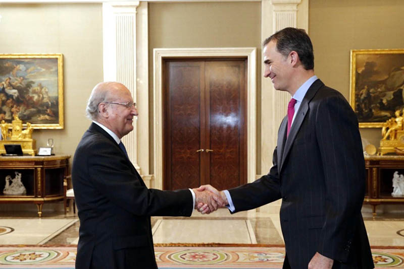
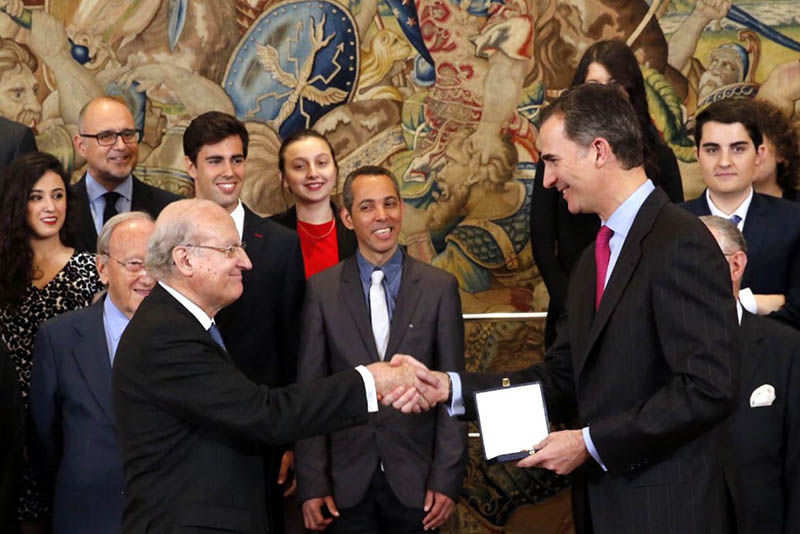
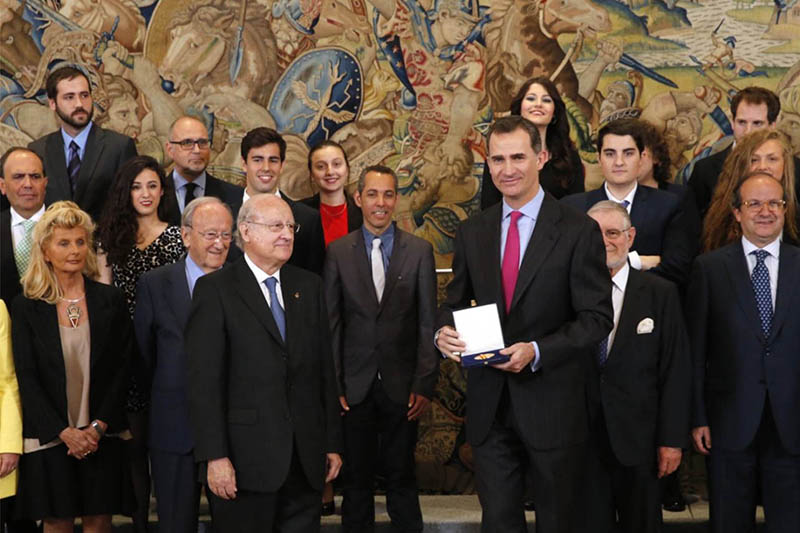
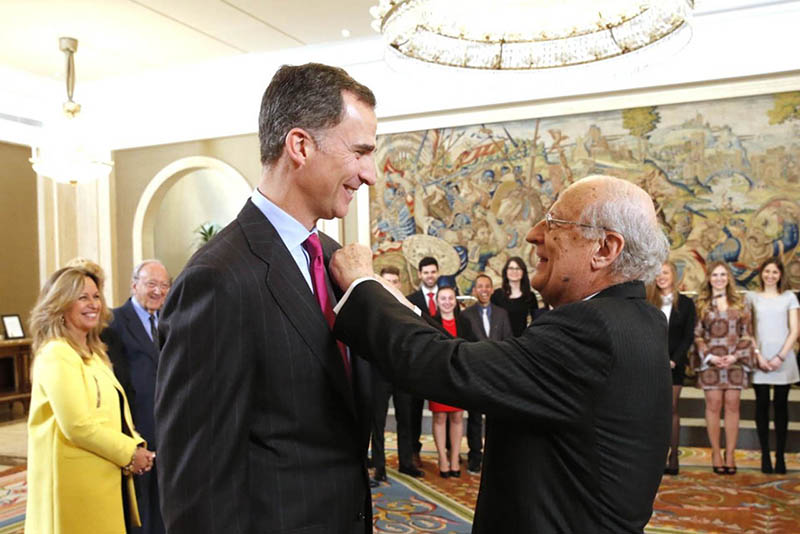

11/05/16 Audiencia de S. M. el Rey Felipe VI a una representación del Real Instituto de Estudios Europeos
Imágenes de la primera parte de la audiencia de S. M. el Rey Felipe
VI a una representación del Real Instituto de Estudios Europeos, en su 30º.
aniversario, integrada por una comisión del Comité de Honor y de la Junta
directiva y por la promoción Felipe González, el día 11 de mayo de 2016

Su Majestad el Rey recibe el saludo del presidente de Real Instituto de Estudios Europeos, Maximiliano Bernad y Álvarez de Eulate

Don Felipe recibe de manos del presidente del Real Instituto de Estudios Europeos la Medalla e Insignia de Oro de ese Real Instituto

Don Felipe tras recibir el galardón durante la audiencia

Su Majestad el Rey junto a las personas que integran la representación del Real Instituto de Estudios Europeos

Momento en que el presidente del Real Instituto de Estudios Europeos impone la medalla e insignia a Su Majestad el Rey